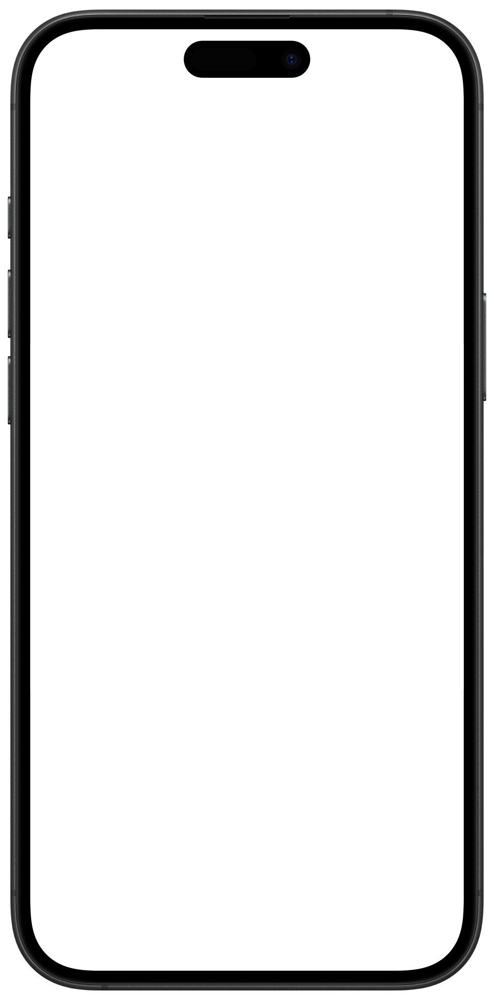

Let me
introduce my...
UI/UX
I’M A MULTIDISCIPLINARY DESIGNER FROM INDONESIA WORKING ACROSS MOTION, BRANDING, ILLUSTRATION, AND 3D.
MY WORK BLENDS PLAYFUL VISUALS WITH STORYTELLING TO CREATE IDENTITIES, ANIMATIONS, AND DIGITAL EXPERIENCES ACROSS DIFFERENT MEDIUMS.
read more
WORK 01
TEAMPROJECT
AQUAPLANET : Website Redesign
FLAVORS OF INDONESIA: AN ILLUSTRATED COOKBOOK CELEBRATES THE RICH DIVERSITY OF INDONESIAN CUISINE THROUGH VIBRANT ILLUSTRATIONS, SIMPLIFIED RECIPES, AND A RETRO WARUNG-INSPIRED DESIGN, MAKING ICONIC DISHES ACCESSIBLE TO GLOBAL FOOD ENTHUSIASTS.
VIEW PROJECTWORK 02
TEAMPROJECT
LAYER : Perfume Community App

A SHORT ANIMATED PIECE ABOUT SPRING ALLERGIES, TURNING POLLEN SEASON INTO A PLAYFUL VISUAL JOURNEY THROUGH HANDMADE TEXTURES, SOFT COLORS, AND BLOOMING TRANSITIONS.
VIEW PROJECTWORK 03
PERSONALPROJECT
HANNE : Shopping Manage App
A 3D VISUALIZATION OF THE FUTURISTIC VENTURI SNEAKER SERIES, CREATED THROUGH DETAILED MODELING, TEXTURING, AND CINEMATIC PRODUCT RENDERING.
VIEW PROJECT